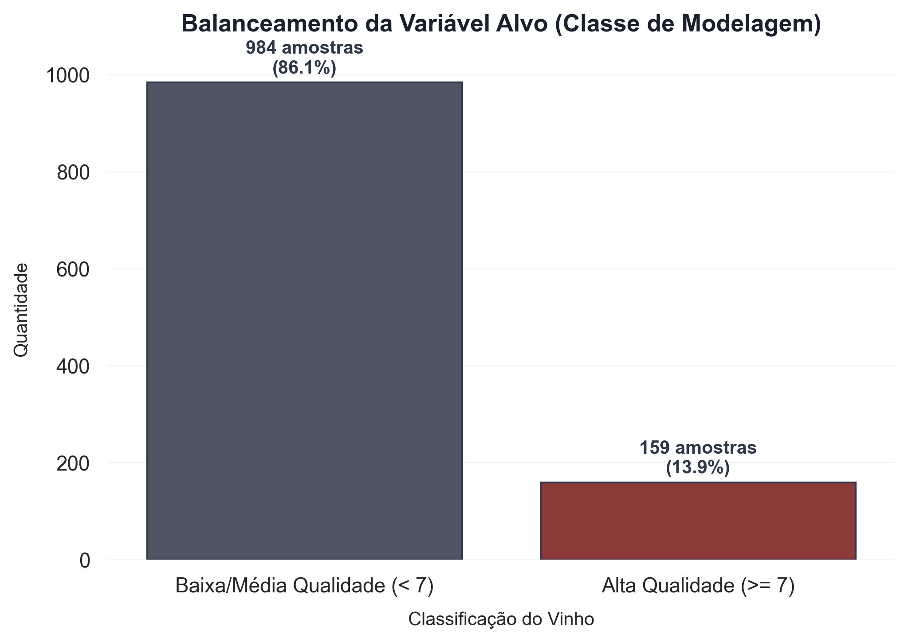
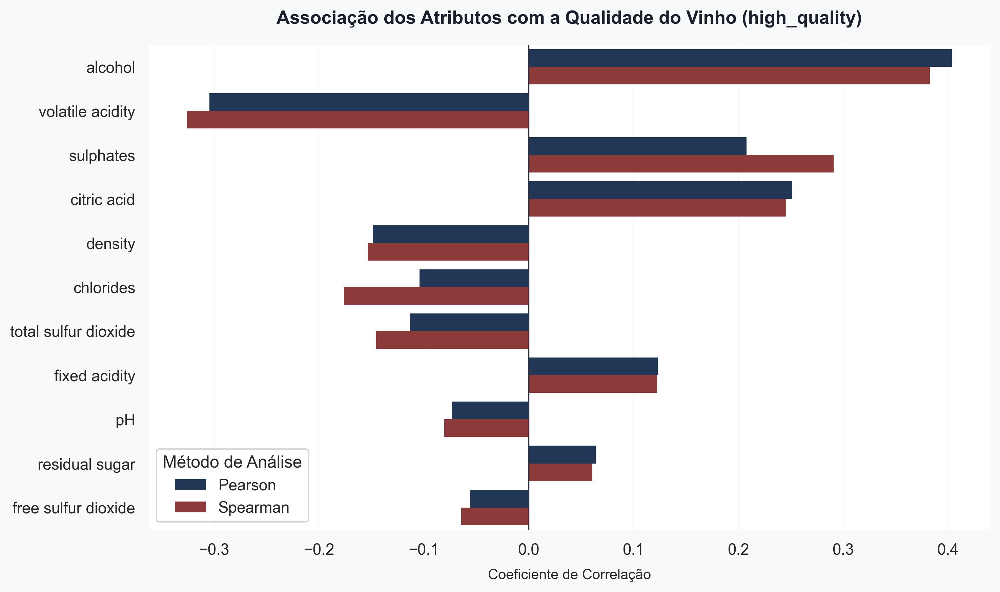
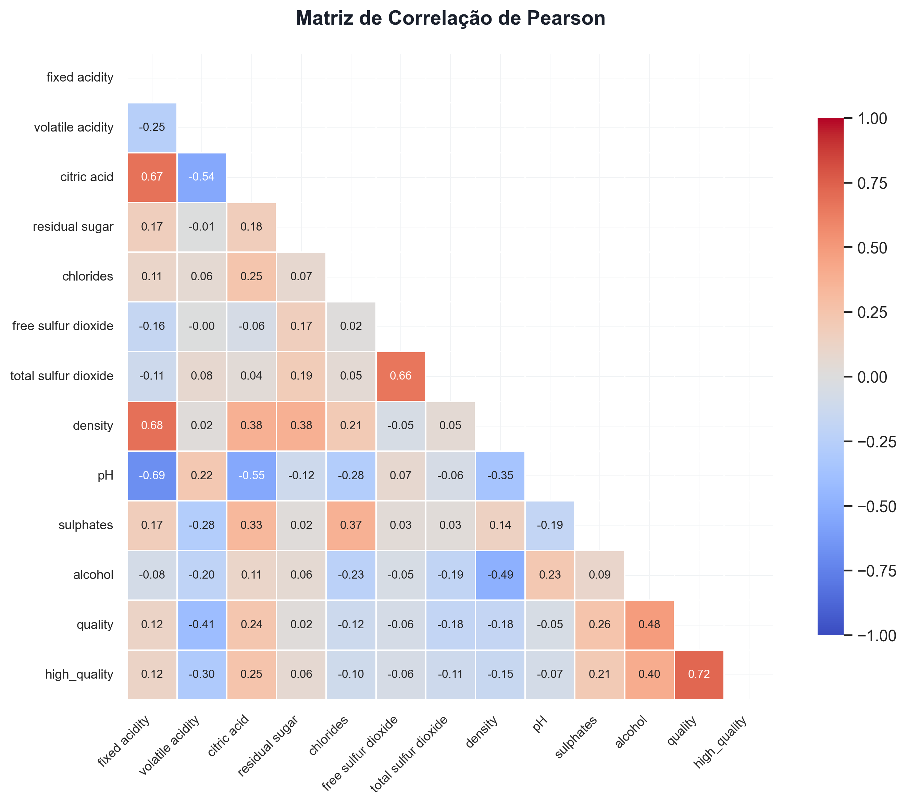
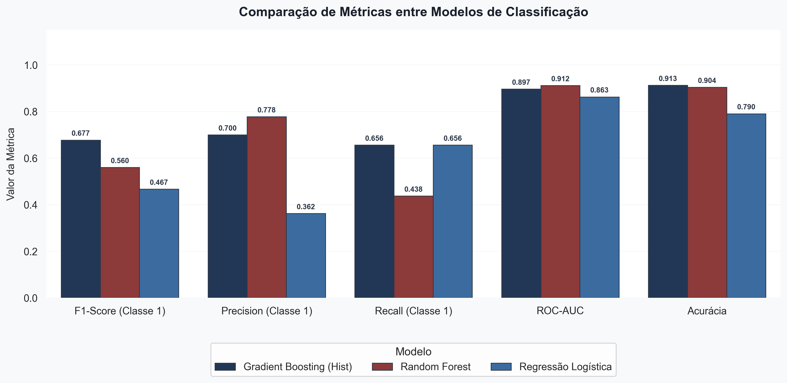
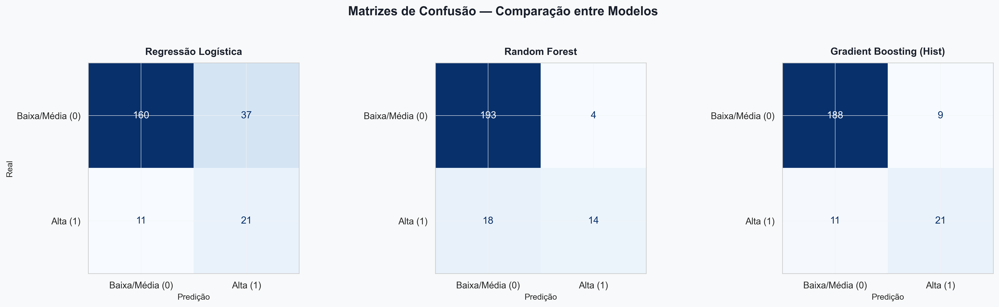
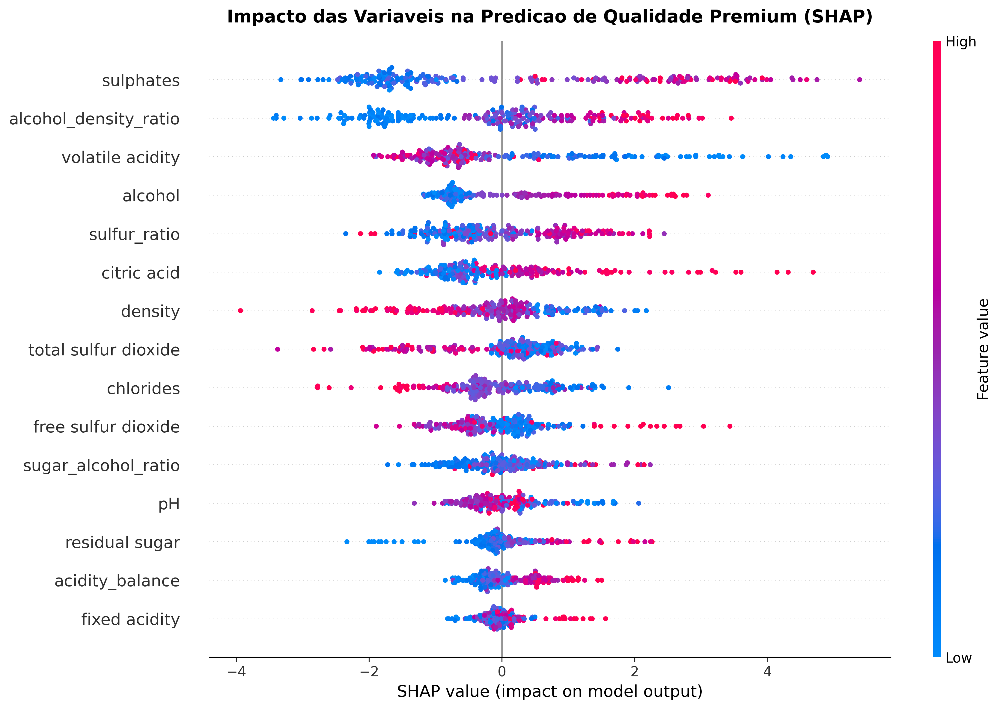

Uma abordagem baseada em dados para otimização da produção vinícola.
Na indústria vitivinícola, a avaliação da qualidade tradicionalmente depende de testes sensoriais humanos realizados por enólogos.
Desafios críticos para a escala de produção:
A Oportunidade: Utilizar dados físico-químicos rotineiros para criar um modelo de predição.
Antes mesmo da avaliação sensorial, classificando automaticamente lotes com alto potencial comercial.
Analisamos um conjunto de dados públicos contendo informações de produção. Nosso foco é encontrar os vinhos de Alta Qualidade (Premium), que são muito raros.
Total: 1.143 Amostras Analisadas

Quais fatores químicos mais se correlacionam com vinhos classificados como Alta Qualidade (Nota ≥ 7)?

O Teor Alcoólico (Alcohol) apresentou a maior correlação positiva. Vinhos com maior teor alcoólico tendem a ser mais bem avaliados.

A Acidez Volátil apresentou correlação negativa forte, indicando que níveis altos depreciam o produto (sabor avinagrado).
Focamos no F1-Score da Classe Minoritária (Premium), que equilibra a capacidade de encontrar os vinhos bons sem dar falsos alarmes.
| Modelo | F1-Score (C1) | Precision (C1) | Recall (C1) | ROC-AUC |
|---|---|---|---|---|
| Regressão Logística | 0.467 | 0.362 | 0.656 | 0.863 |
| Random Forest | 0.560 | 0.778 | 0.438 | 0.912 |
| Gradient Boosting (Hist) 🏆 | 0.677 | 0.700 | 0.656 | 0.897 |


O modelo Gradient Boosting não é uma "caixa preta". Utilizando a técnica SHAP, mapeamos exatamente por que o modelo classifica um vinho como Premium.

Proposta de automação da triagem antes do engarrafamento, baseada na probabilidade calculada pelo modelo.
| Score do Modelo | Classificação do Lote | Ação Recomendada (Produção) |
|---|---|---|
| ≥ 80% | Alto Potencial Premium | Linha de envelhecimento especial (barricas de carvalho); precificação elevada. |
| 50% a 79% | Qualidade Intermediária | Revisão pelo enólogo chefe para ajustes químicos finos antes de fechar o lote. |
| < 50% | Lote Comum | Destinar para marcas de entrada ou vinho de mesa rápido. Evitar barricas. |
Economia do tempo dos especialistas, redução de desperdício em barricas caras e padronização da detecção de qualidade premium.
O Gradient Boosting demonstrou ser altamente viável para modernizar o controle de qualidade. Atingimos 91% de acurácia global e um bom equilíbrio na detecção da classe premium.
Mais do que apenas prever, a interpretabilidade revelou alavancas acionáveis (Sulfatos e Acidez) que os produtores podem ajustar durante a fermentação.